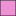

<!doctype html>
<html lang="en">
    <head>
        <meta charset="utf-8">
        <meta http-equiv="X-UA-Compatible" content="IE=edge">
        <meta name="viewport" content="initial-scale=1,user-scalable=no,maximum-scale=1,width=device-width">
        <meta name="mobile-web-app-capable" content="yes">
        <meta name="apple-mobile-web-app-capable" content="yes">
        <link rel="stylesheet" href="css/leaflet.css">
        <link rel="stylesheet" href="css/qgis2web.css"><link rel="stylesheet" href="css/fontawesome-all.min.css">
        <style>
        #map {
            width: "100%";
            height: 595px;
        }
        </style>
        <title></title>
    </head>
    <body>
        <div id="map">
        </div>
        <script src="js/qgis2web_expressions.js"></script>
        <script src="js/leaflet.js"></script>
        <script src="js/leaflet.rotatedMarker.js"></script>
        <script src="js/leaflet.pattern.js"></script>
        <script src="js/leaflet-hash.js"></script>
        <script src="js/Autolinker.min.js"></script>
        <script src="js/rbush.min.js"></script>
        <script src="js/labelgun.min.js"></script>
        <script src="js/labels.js"></script>
        <script src="data/DISTRITOS_1.js"></script>
        <script>
        var map = L.map('map', {
            zoomControl:true, maxZoom:28, minZoom:1
        }).fitBounds([[-12.531088982970324,-77.48474922951705],[-11.54582598894384,-76.46791794394504]]);
        var hash = new L.Hash(map);
        map.attributionControl.setPrefix('<a href="https://www.geogpsperu.com" target="_blank">GEO GPS PERÚ</a> &middot; <a href="https://leafletjs.com" title="A JS library for interactive maps">Leaflet</a> &middot; <a href="https://www.geogpsperu.com">Suyo Pomalía</a>');
        var autolinker = new Autolinker({truncate: {length: 30, location: 'smart'}});
        var bounds_group = new L.featureGroup([]);
        function setBounds() {
        }
        map.createPane('pane_CartoDarkWithout_0');
        map.getPane('pane_CartoDarkWithout_0').style.zIndex = 400;
        var layer_CartoDarkWithout_0 = L.tileLayer('https://basemaps.cartocdn.com/rastertiles/dark_nolabels/{z}/{x}/{y}.png', {
            pane: 'pane_CartoDarkWithout_0',
            opacity: 1.0,
            attribution: '',
            minZoom: 1,
            maxZoom: 28,
            minNativeZoom: 0,
            maxNativeZoom: 18
        });
        layer_CartoDarkWithout_0;
        map.addLayer(layer_CartoDarkWithout_0);
        function pop_DISTRITOS_1(feature, layer) {
            var popupContent = '<table>\
                    <tr>\
                        <th scope="row">Distrito:</th>\
                        <td>' + (feature.properties['NOMBDIST'] !== null ? autolinker.link(feature.properties['NOMBDIST'].toLocaleString()) : '') + '</td>\
                    </tr>\
                    <tr>\
                        <th scope="row">UBIGEO:</th>\
                        <td>' + (feature.properties['UBIGEO'] !== null ? autolinker.link(feature.properties['UBIGEO'].toLocaleString()) : '') + '</td>\
                    </tr>\
                    <tr>\
                        <th scope="row">correo:</th>\
                        <td>' + (feature.properties['CONTACTO'] !== null ? autolinker.link(feature.properties['CONTACTO'].toLocaleString()) : '') + '</td>\
                    </tr>\
                    <tr>\
                        <th scope="row">Lotes:</th>\
                        <td>' + (feature.properties['lotes'] !== null ? autolinker.link(feature.properties['lotes'].toLocaleString()) : '') + '</td>\
                    </tr>\
                </table>';
            layer.bindPopup(popupContent, {maxHeight: 400});
        }

        function style_DISTRITOS_1_0(feature) {
            switch(String(feature.properties['q2wHide_NOMBPROV'])) {
                case 'CALLAO':
                    return {
                pane: 'pane_DISTRITOS_1',
                opacity: 1,
                color: 'rgba(35,35,35,1.0)',
                dashArray: '',
                lineCap: 'butt',
                lineJoin: 'miter',
                weight: 1.0, 
                fill: true,
                fillOpacity: 1,
                fillColor: 'rgba(238,145,213,1.0)',
                interactive: true,
            }
                    break;
                case 'LIMA':
                    return {
                pane: 'pane_DISTRITOS_1',
                opacity: 1,
                color: 'rgba(5,113,52,1.0)',
                dashArray: '',
                lineCap: 'butt',
                lineJoin: 'miter',
                weight: 1.0, 
                fill: true,
                fillOpacity: 1,
                fillColor: 'rgba(181,255,211,1.0)',
                interactive: true,
            }
                    break;
            }
        }
        map.createPane('pane_DISTRITOS_1');
        map.getPane('pane_DISTRITOS_1').style.zIndex = 401;
        map.getPane('pane_DISTRITOS_1').style['mix-blend-mode'] = 'normal';
        var layer_DISTRITOS_1 = new L.geoJson(json_DISTRITOS_1, {
            attribution: '',
            interactive: true,
            dataVar: 'json_DISTRITOS_1',
            layerName: 'layer_DISTRITOS_1',
            pane: 'pane_DISTRITOS_1',
            onEachFeature: pop_DISTRITOS_1,
            style: style_DISTRITOS_1_0,
        });
        bounds_group.addLayer(layer_DISTRITOS_1);
        map.addLayer(layer_DISTRITOS_1);
        var baseMaps = {};
        L.control.layers(baseMaps,{'DISTRITOS<br /><table><tr><td style="text-align: center;"></td><td>CALLAO</td></tr><tr><td style="text-align: center;"></td><td>LIMA</td></tr></table>': layer_DISTRITOS_1,"Carto Dark Without": layer_CartoDarkWithout_0,},{collapsed:false}).addTo(map);
        setBounds();
        </script>
    </body>
</html>
